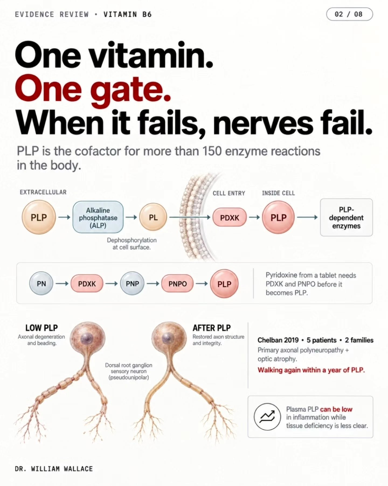
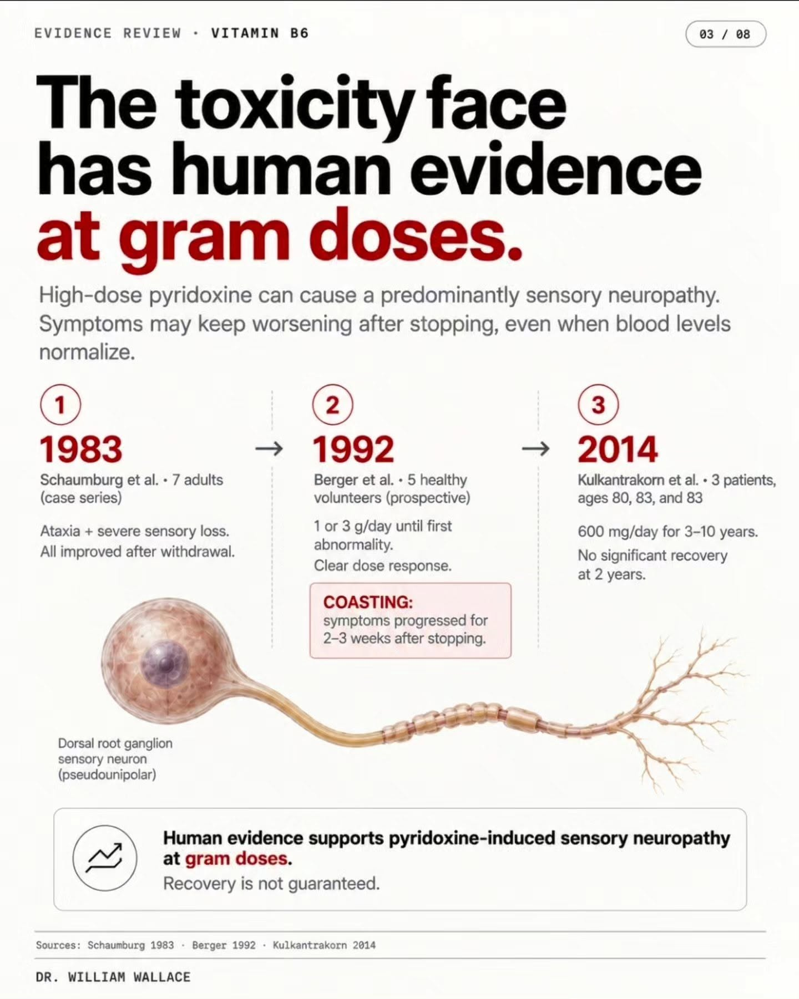
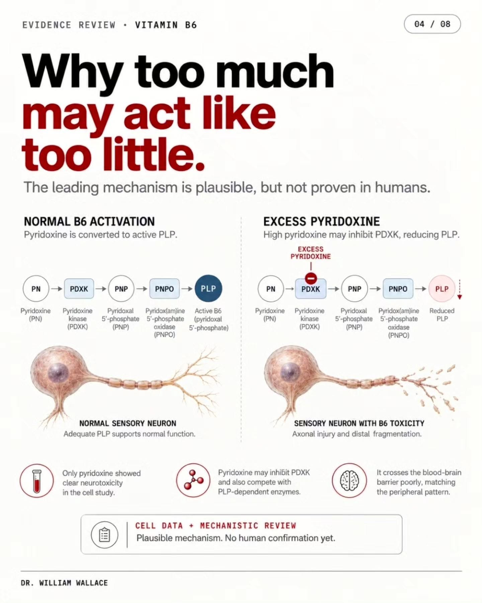
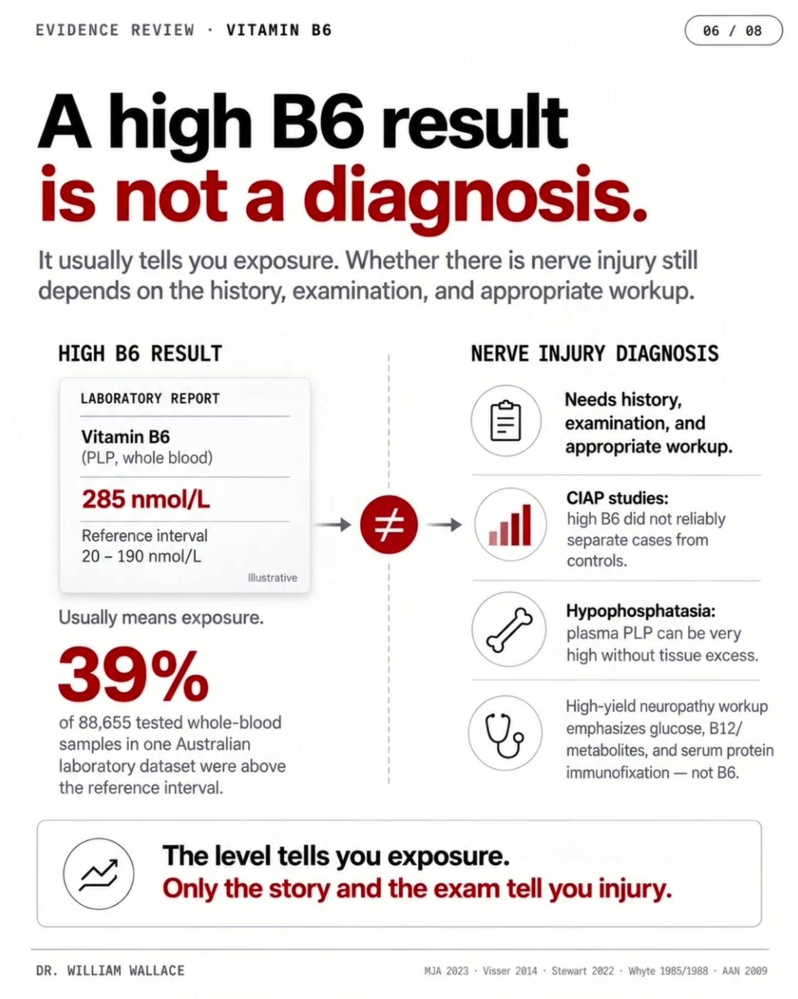

Recent randomized trials have demonstrated that vitamin B6 can be useful in treating anxiety and depression. See this post: ↪ 100 mg vitamin B6 reduced depression symptoms in a new randomized trial; B12 failed.
But too much can be dangerous.
Louis notes that recent randomized trials suggest B6 helps anxiety and depression but warns that too much can be dangerous. The shared text says high-dose pyridoxine can cause sensory neuropathy, clearest at 1-3 g/day, while the minimum toxic dose is uncertain and regulatory limits vary from about 10 to 100 mg/day.
Recent randomized trials have demonstrated that vitamin B6 can be useful in treating anxiety and depression. See this post: ↪ 100 mg vitamin B6 reduced depression symptoms in a new randomized trial; B12 failed.
But too much can be dangerous.
Vitamin B6 is essential for normal nerve function, but excess supplemental B6 is not automatically harmless.
High-dose pyridoxine can cause a predominantly sensory neuropathy with tingling, burning, numbness, balance problems, and sometimes incomplete recovery.
The clearest human evidence comes from very high doses. In a prospective study, healthy volunteers taking 1 or 3 g/day developed neurological abnormalities, with symptoms continuing to worsen for 2 to 3 weeks after stopping.
Where risk begins is much less certain. A minimum toxic supplemental dose has not been established, and regulatory limits now range from roughly 10 to 100 mg/day depending on the country and regulatory framework.
A high B6 blood level usually reflects exposure, often from supplements, but it does not by itself diagnose neuropathy or tell you how severe nerve injury is.
The practical point is moderation, not avoidance. B6 can be useful and deficiency matters. But check the total amount across B-complexes, multivitamins, magnesium products, and other supplements rather than assuming more is better. If unexplained tingling, burning, or numbness develops, review your B6 intake with your clinician.References:
Schaumburg H, et al. N Engl J Med. 1983. PMID: 6308447
Berger AR, et al. Neurology. 1992. PMID: 1620347
EFSA Panel on Nutrition. EFSA Journal. 2023. PMID: 37207271Visser NA, et al. J Peripher Nerv Syst. 2014. PMID: 24813907
Stewart JD, et al. 2022. PMID: 34931740





Louis notes a new RCT reports that 100 mg vitamin B6 significantly reduced depression symptoms while B12 did not. The same authors found in 2022 that B6 reduces anxiety. He notes depression and anxiety are CVD risk factors and warns of nerve toxicity with prolonged high doses.
Summarizes the supplements Peter Attia says he takes: B6, high-EPA fish oil aimed at a red-cell EPA+DHA level near 12%, vitamin D 5,000 IU, several forms of magnesium, methylfolate and B12 to keep homocysteine below nine, and baby aspirin. This is a personal regimen, not evidence.

Louis shares a review summary showing B12 supplements reliably lower homocysteine, but large randomized trials did not consistently reduce heart attacks or cardiac deaths. The strongest benefit was for stroke, mainly where foods are not folic-acid fortified, but most trials combined B12 with folic acid and B6. Routine B12 solely for CVD prevention is not supported, though it is essential if deficient.
Louis reshares his summary of the Oxford VITACOG randomized trial of folate, B6 and B12 in elderly people with MCI. B vitamins slowed brain shrinkage, most in those with high baseline homocysteine, and later analyses suggested benefit depended on high omega-3 status.

Louis shares a short Cleveland Clinic explainer that homocysteine is an amino acid broken down by vitamins B12, B6 and folate, and that high levels may indicate deficiency and increase clot, heart disease and stroke risk. It is basic background without trial evidence.
Louis shares a Substack critique of the glycation-focused supplement GLYLO, which questions the mouse lifespan data, the role of reduced food intake and differences between the research and consumer formulas. His comment is that even if benefits come from inadvertent calorie restriction, that is still significant, as with GLP-1 drugs.